長期トレンド
JKMとJEPXシステムプライスの推移グラフ
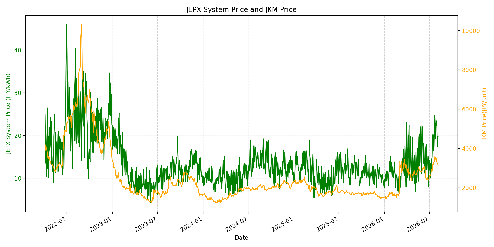
WTIの推移グラフ
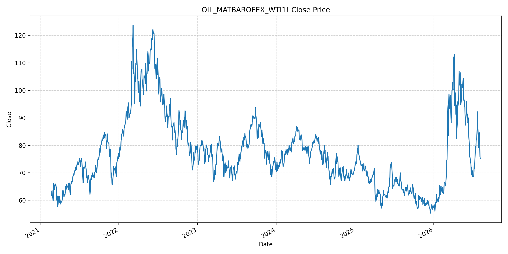
JEPXエリアプライスグラフ（直近一年分）
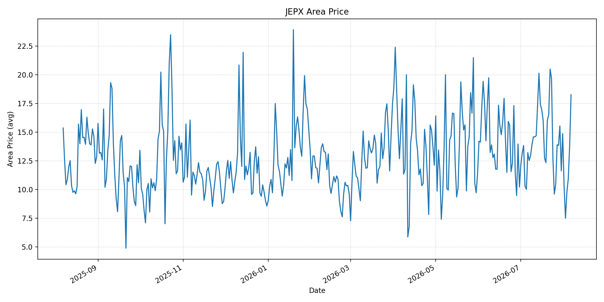
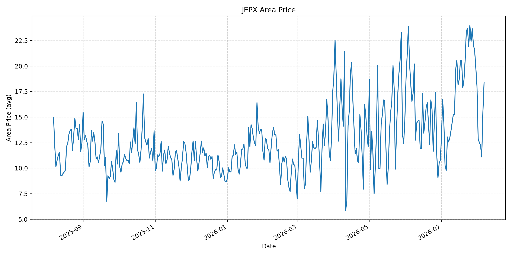
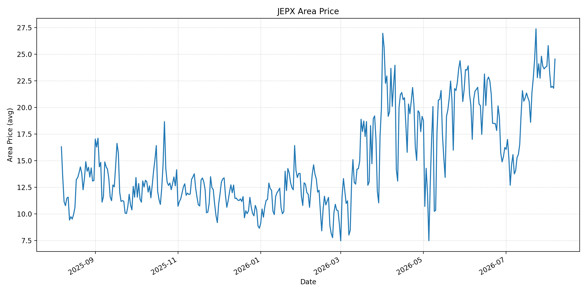
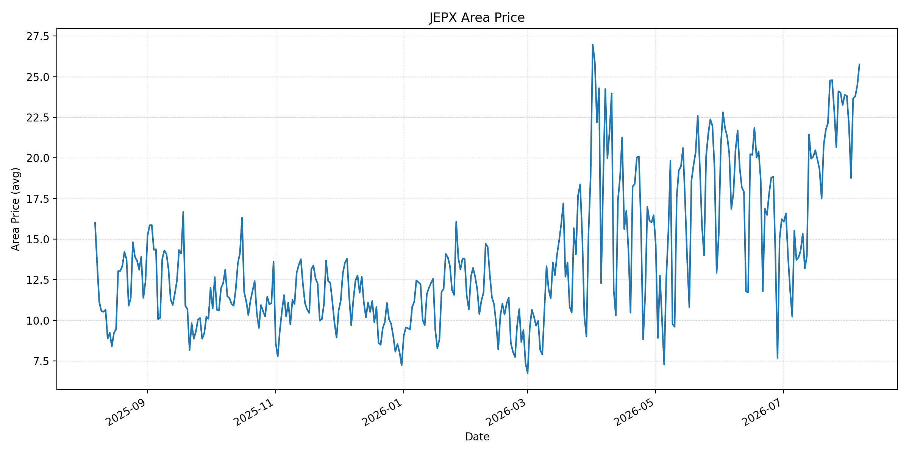
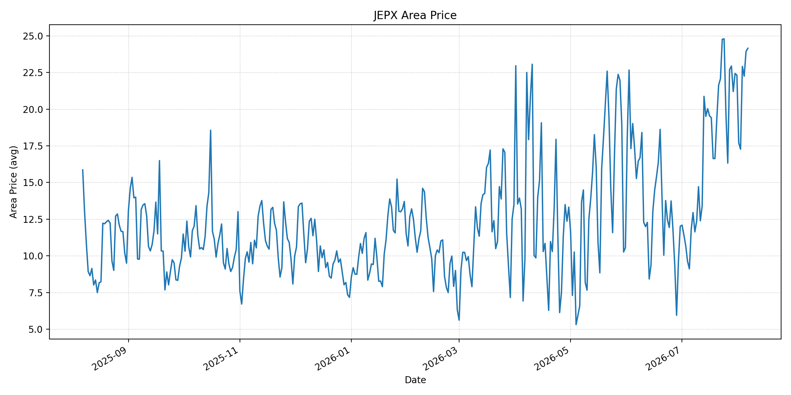
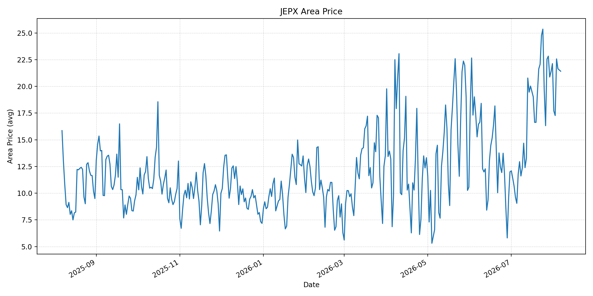
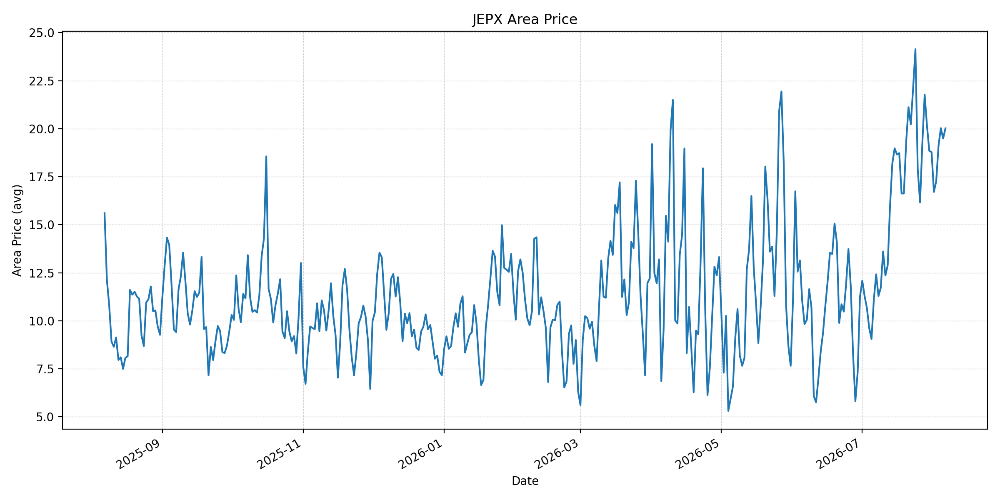
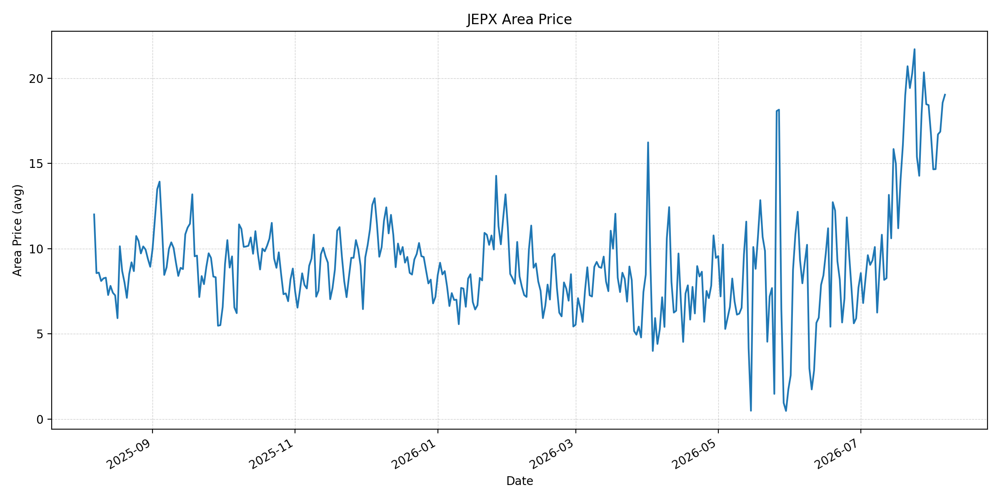
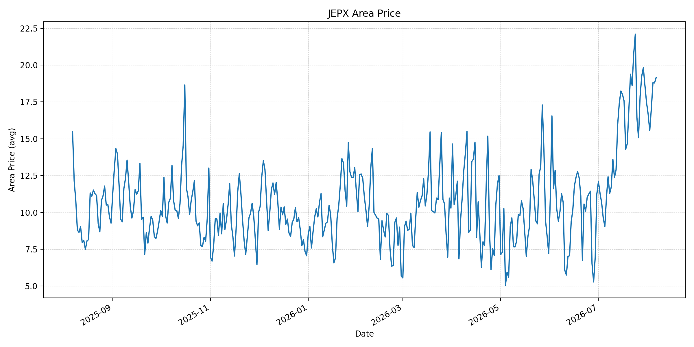
短期トレンド
JKMとJEPXシステムプライスの推移グラフ
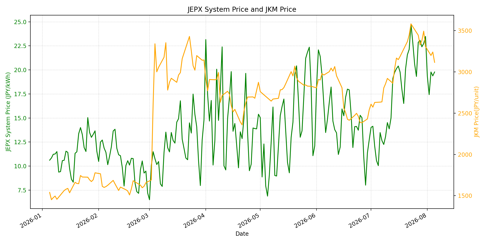
WTIの推移グラフ
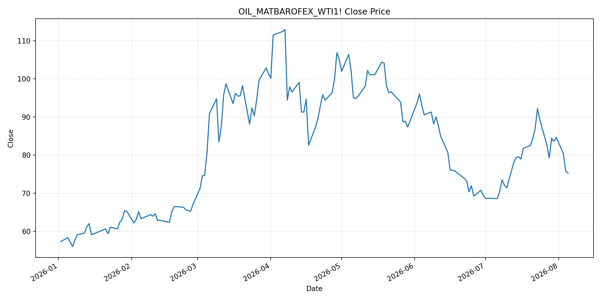
JEPXシステムプライス
JEPXは受渡日ベースの最新非空値で評価しています。最新値は 2026-08-06 分です。先週終値は 2026-07-30 時点の直近値、先月終値は 2026-07-31 時点の直近値で評価しています。
| エリア | 当日価格 | 前日価格 | 前日比（％） | 先週終値 | 先週比（％） | 先月終値 | 先月比（％） | 過去最高値 | 最高値比（％） |
|---|---|---|---|---|---|---|---|---|---|
| システム | 23.44 | 19.78 | 18.50 | 22.74 | 3.08 | 23.48 | -0.17 | 64.06 | -63.41 |
| 北海道 | 18.25 | 13.84 | 31.86 | 11.62 | 57.06 | 14.86 | 22.81 | 73.92 | -75.31 |
| 東北 | 18.38 | 15.48 | 18.73 | 19.87 | -7.50 | 18.04 | 1.88 | 84.92 | -78.36 |
| 東京 | 24.54 | 21.80 | 12.57 | 23.78 | 3.20 | 23.85 | 2.89 | 86.13 | -71.51 |
| 中部 | 25.76 | 24.47 | 5.27 | 23.88 | 7.87 | 23.83 | 8.10 | 52.06 | -50.52 |
| 北陸 | 24.15 | 23.93 | 0.92 | 22.43 | 7.67 | 22.32 | 8.20 | 46.48 | -48.05 |
| 関西 | 21.42 | 21.53 | -0.51 | 21.39 | 0.14 | 22.13 | -3.21 | 46.48 | -53.92 |
| 中国 | 20.02 | 19.49 | 2.72 | 18.85 | 6.21 | 18.78 | 6.60 | 46.48 | -56.93 |
| 四国 | 19.04 | 18.57 | 2.53 | 18.43 | 3.31 | 16.74 | 13.74 | 46.48 | -59.04 |
| 九州 | 19.15 | 18.79 | 1.92 | 18.62 | 2.85 | 17.46 | 9.68 | 40.54 | -52.77 |
LNG先物価格
最新値は 2026-08-05 の LNG(close) です。前日価格は直近非空値の 2026-08-04、先週終値は 2026-07-29 時点の直近値、先月終値は 2026-07-31 時点の直近値で評価しています。
| 当日価格 | 前日価格 | 前日比（％） | 先週終値 | 先週比（％） | 先月終値 | 先月比（％） | 過去最高値 | 最高値比（％） |
|---|---|---|---|---|---|---|---|---|
| 3116.00 | 3241.00 | -3.86 | 3380.00 | -7.81 | 3307.00 | -5.78 | 10319.00 | -69.80 |
石油先物価格
最新値は 2026-08-05 の OIL(close) です。前日価格は直近非空値の 2026-08-04、先週終値は 2026-07-29 時点の直近値、先月終値は 2026-07-31 時点の直近値で評価しています。
| 当日価格 | 前日価格 | 前日比（％） | 先週終値 | 先週比（％） | 先月終値 | 先月比（％） | 過去最高値 | 最高値比（％） |
|---|---|---|---|---|---|---|---|---|
| 75.22 | 75.77 | -0.73 | 84.46 | -10.94 | 84.67 | -11.16 | 123.70 | -39.19 |
ニュース
イラン情勢に関するニュース
- 2026年8月6日時点で、APは、米国とイランがホルムズ海峡再開に向けた合意に近づいている一方、イラン側は米国による港湾封鎖解除を条件としており、どちらかが譲歩しなければ成立しにくいと報じました。 参照: AP, 2026-08-06
- APの中東情勢まとめでは、イスラエルとヒズボラの停戦が不安定化し、米財務省が一部イラン関連企業への制裁を解除した一方で、政策転換ではないと説明したとされています。中東全体の緊張はまだ解けていません。 参照: AP, 2026-08-06
ホルムズ海峡経由の石油・LNGに関するニュース
- Guardianは、2026年8月5日にイランとオマーンがホルムズ海峡の通航ルート座標で暫定合意したと報じました。ただし、イランは米国の港湾封鎖解除を条件としており、合意は一時的かつ脆弱です。 参照: Guardian, 2026-08-05
- WSJは、ホルムズ再開期待と米国原油在庫の増加を受け、8月5日のWTIが75.22ドル、Brentが79.45ドル近辺で推移したと報じました。燃料価格は下落基調ですが、海峡再開の実効性はまだ確認段階です。 参照: WSJ, 2026-08-06
ホルムズ海峡経由でない石油・LNGに関するニュース
- APの中東情勢まとめでは、イラン支援のフーシ派がサウジ関連タンカー2隻へのミサイル攻撃を主張したと報じられました。証拠提示やサウジ側の確認は限定的ですが、紅海・バブエルマンデブ側の輸送リスクは残っています。 参照: AP, 2026-08-06
- Guardianも、ホルムズ交渉と並行してフーシ派が紅海・アデン湾方面のサウジ関連船を狙う動きが続いていると報じました。ホルムズを回避しても、輸送費・保険料の上昇圧力は残ります。 参照: Guardian, 2026-08-05
日本国内のイラン戦争に関係するニュース
- 過去24時間で、JEPX制度、国内電力需給ルール、または日本政府のイラン戦争関連対策を直接変更する主要な新規公表は確認できませんでした。
- 関連する国内材料として、JOGMECは8月3日更新で、7月27〜31日のJKMが中東緊張緩和と在庫余裕で低下後、米・イラン緊張再燃で一時反発したと整理しました。METIは7月29日時点の発電用LNG在庫が202万トンと公表されていることも同資料に示されています。 参照: JOGMEC, 2026-08-03
インサイト
ニュース事項による日本の電力市場への影響（短期：数日〜1週間）
- JEPXシステムプライスは 23.44 円/kWhで前日比 18.50%、先週比 3.08% です。OILとLNGは下落基調ですが、当日の電力スポットは反発しており、需給要因とホルムズ再開の不確実性が価格を下支えしています。
- LNGは 3116.00 と前回比 -3.86%、OILは 75.22 と前回比 -0.73% です。ホルムズ暫定合意が実効性を持てば燃料費には下押し材料ですが、米国封鎖解除やイラン管理権を巡る条件が残るため、数日〜1週間は反落と再上昇の両方向に振れやすいです。
- 北海道は前日比 31.86%、東京は 12.57%、中部は 5.27% 上昇し、中部は 25.76 円/kWhまで上がりました。燃料市況の下落だけでは短期のJEPX価格を直ちに抑え込めていません。
ニュース事項による日本の電力市場への影響（長期：1ヶ月〜半年）
- LNGは先月比 -5.78%、OILは -11.16% と7月末比で下落しています。ホルムズ通航ルートが定着すれば中期の燃料プレミアムは縮小しますが、フーシ派のタンカー攻撃主張が続く限り、紅海側の輸送リスクは残ります。
- JEPXシステムは先月比 -0.17% とほぼ横ばいですが、北陸は 8.20%、中部は 8.10%、四国は 13.74% 上昇しています。燃料価格が下がっても、地域需給や輸送リスクが残れば、地域間の価格差は1ヶ月〜半年で続く可能性があります。
- 過去最高値比ではシステム -63.41%、LNG -69.80%、OIL -39.19% と歴史的ピークからは距離があります。中期的にはホルムズ合意の履行、紅海安全保障、国内LNG在庫の維持が、日本の火力限界費用とJEPX価格の方向を決めます。